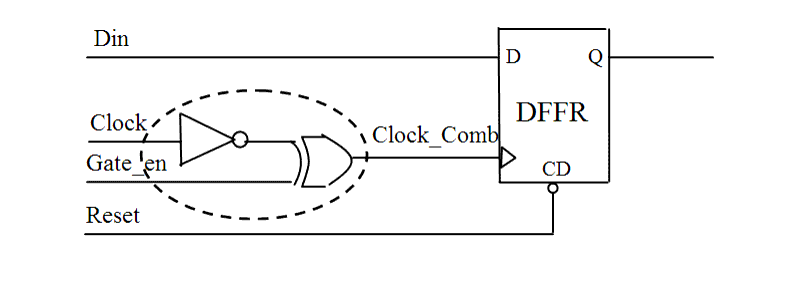

| Description | This rule checks if there is a combinatorial gate in the clock path, and thus a gated clock generated in the design. A gated clock may adversely affect timing analysis and clock tree synthesis. You can activate this rule to check such clocks and avoid metastability problems in the timing sequence. If rule NTL_CLK10 or NTL_CLK11 violation is reported on a gate, this rule will not report the same violation again. |
| Policy | DESIGN |
| Ruleset | CLOCKS |
| Language | VHDL/Verilog |
| Type | Hardware |
| Severity | Error |
This is an example of invalid Verilog code, followed by a circuit diagram that illustrates the problem:
module ntl_clk12_top (Clock, Reset, Gate_en, Din, Dout); input Clock, Reset, Gate_en, Din; output Dout; reg Dout; wire Clock_Comb; assign Clock_Comb = (~Clock) ^ Gate_en; // NTL_CLK12 fires -- gated clock with another combinational cell //DFFR -- flip-flop with reset DFFR I0(.D(Din), .CP(Clock_Comb), .CD(Reset), .Q(Dout)); ... endmodule